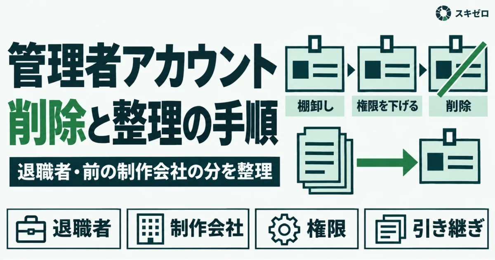
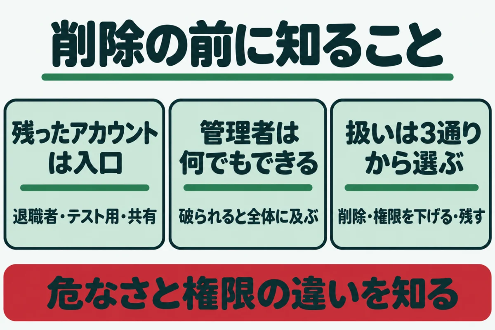
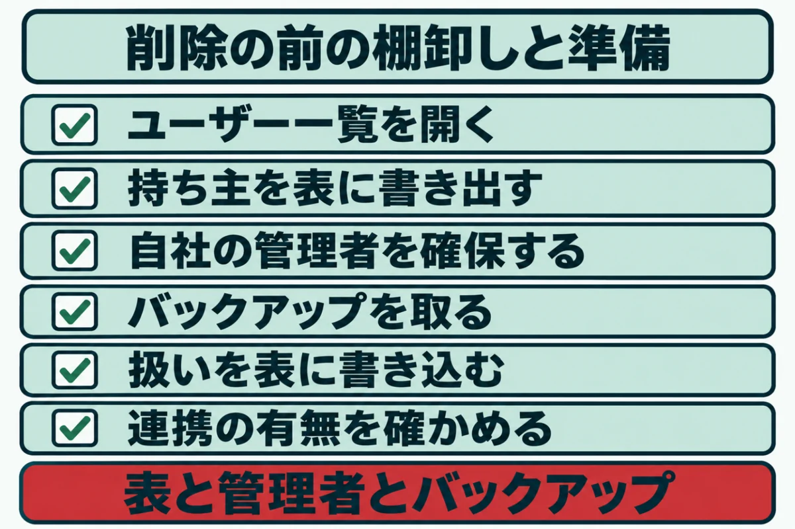
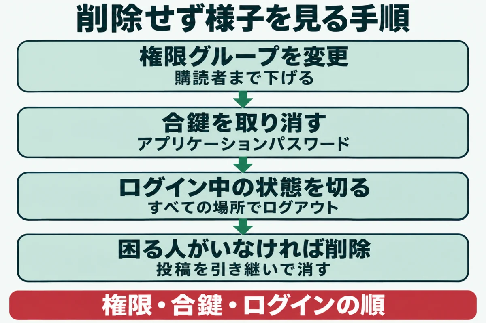
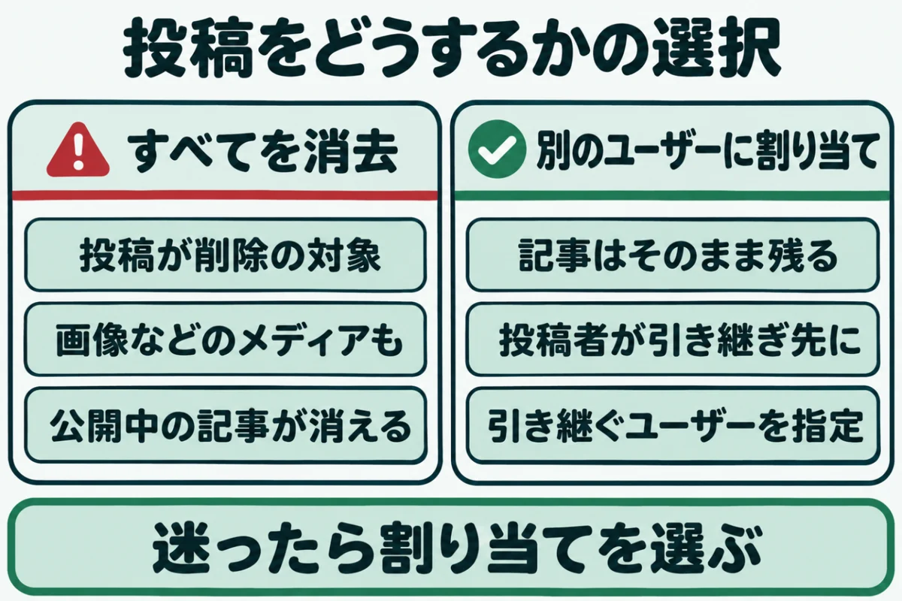
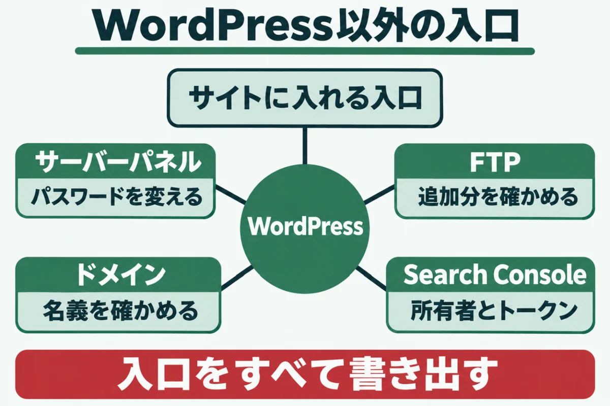

WordPressの管理者アカウントを削除する手順退職者や前の制作会社のアカウントを整理する

退職した担当者や前の制作会社のアカウントが、WordPressに残ったままになっていませんか？
使われていないアカウントは、持ち主の目が届かない入口です。総務省のサイトも、退職したユーザーのアカウントを不正アクセスの原因に挙げています。
この記事では、棚卸しから権限の変更、削除までの手順を順にまとめました。投稿の引き継ぎと、WordPress以外のアカウントの見直しも扱います。
画面の名前は、2026年11月時点のWordPress 7.1.5の日本語版で確かめたものです。作業の前に、管理者としてログインできる状態にしておいてください。
WordPressの管理者アカウントを削除する前に知っておきたいこと

使わなくなったWordPressの管理者アカウントは、削除するか権限を下げるのが基本です。残しておくと、持ち主が気づかないまま使われるおそれがあります。
ただし、いきなり消すと投稿が消えたり、自分が入れなくなったりするのです。先に、残ったアカウントの危なさと権限の違いを押さえましょう。順番を守れば、難しい作業ではありません。
退職者や前の制作会社のアカウントが危ない理由
総務省のサイトは、正規のユーザー情報が攻撃者に渡る原因を挙げています。その中に、退職したユーザーのアカウントとテスト用のアカウントがあるのです。長く変更されていない共有のアカウントも並んでいます。IPAの20ヶ条も、最低限必要なものを除いて削除するよう求めました。開発のときに使ったアカウントが残る例にも触れています。使う人がいないアカウントは、パスワードが古いまま放置されがちです。不審なログインがあっても、気づく人がいません。
管理者は何でもできる権限だと知っておく
WordPressには、「権限グループ」という役割の区分があります。公式ドキュメントによると、管理者はサイトの管理機能のすべてを使える役割です。編集者は、ほかの人の分も含めて投稿を公開し、管理できます。投稿者は自分の投稿の公開まで、寄稿者は下書きまでです。購読者は、自分のプロフィールだけを扱えます。管理者が1つ破られると、影響はサイト全体に及ぶのです。公式の手引きも、悪意あるプログラムを入れられるおそれを挙げました。
- 参考：Roles and Capabilities｜WordPress.org Documentation
- 参考：Hardening WordPress｜WordPress Developer Resources
削除する・権限を下げる・残すの3通りから選ぶ
アカウントの扱いは、削除する、権限を下げる、残すの3通りです。もう使わないと分かっているなら、削除を選びます。迷うものは、いったん権限を下げて様子を見る方法が安全でしょう。総務省のサイトも、不要なアカウントは無効にするか削除するよう勧めています。保守を頼んでいる制作会社のアカウントは、残してかまいません。ただし、作業に要る権限だけにしぼるのが勧めです。WordPressの公式ドキュメントも、管理者の数をしぼるよう書いています。
WordPressの管理者アカウントを削除する前の棚卸しと準備

WordPressの管理者アカウントを削除する前に、誰のアカウントかをすべて書き出します。持ち主が分からないまま消すと、動いている連携まで止めてしまうからです。
あわせて、自社の管理者アカウントとバックアップを用意してください。この2つがあれば、作業の途中で困っても立て直せます。準備にかかる手間は、ユーザーの数しだいです。
ユーザー一覧で、誰のアカウントかを書き出す
管理画面の「ユーザー」から「ユーザー一覧」を開きます。並ぶのは、ユーザー名、名前、メール、権限グループ、投稿の数です。一覧の上のリンクを使えば、管理者だけにしぼって見られます。名前とメールアドレスから持ち主を特定し、表に書き出しましょう。投稿の数は、削除のときの引き継ぎの判断に使います。運営者の自社サイトの点検では、数年前の外注先の編集者アカウントが2つ残っていました。誰も覚えていないアカウントは、珍しくないのです。
自社の管理者アカウントを先に確保する
ほかの管理者を消す前に、自社の管理者アカウントで入れることを確かめます。制作会社のアカウントしか使ってこなかった場合は、とくに大切です。「ユーザー」の「ユーザーを追加」で、権限グループを管理者にして作ります。メールアドレスは、会社で受け取れるものにしてください。作ったら一度ログアウトし、新しいアカウントで入れることを確かめてから進めましょう。公式ドキュメントによると、ログイン中の自分自身は削除できません。自分で入った管理者は、最後まで残るわけです。
バックアップを取り、表に扱いを書き込む
削除は取り消せない操作なので、先にバックアップを取ります。ファイルとデータベースの両方をそろえてください。次に、書き出した表に「削除」「権限を下げる」「残す」を書き込みましょう。連携に使っているアカウントがないかも確かめます。外部のサービスが、特定のユーザーとして投稿していることがあるからです。残す管理者には、2段階認証も足します。手順は次の記事にまとめました。WordPressのログインに2段階認証を設定する方法｜プラグイン選びと締め出されない準備です。
WordPressの管理者アカウントを削除せず、権限を下げて様子を見る手順

持ち主や用途がはっきりしないWordPressの管理者アカウントは、削除の前に権限を下げます。購読者まで下げれば、できることはごくわずかです。
困る人が出たら、権限を戻すだけで済みます。削除と違って、投稿もユーザーの情報もそのまま残るからです。権限のほかに、合鍵にあたる2つの情報も忘れずに片づけましょう。
権限グループを購読者に変更する
ユーザー一覧で、対象のユーザーにチェックを入れます。一覧の上にある「権限グループを変更…」から「購読者」を選んでください。「変更」を押すと、権限が切り替わります。ユーザーの編集画面にある「権限グループ」の欄でも、同じ変更ができるのです。購読者が扱えるのは、自分のプロフィールだけになります。公式ドキュメントも、古いユーザーは権限を下げるか削除するよう勧めました。記事を書き続ける人なら、編集者や投稿者で足りるでしょう。
アプリケーションパスワードを取り消す
アプリケーションパスワードは、外部のアプリがユーザーの代わりにつなぐための合鍵です。ログイン画面からは入れませんが、REST APIなどで使えます。ユーザーにひもづくので、権限を下げただけでは消えません。ユーザーの編集画面の下のほうに、一覧があります。名前、作成日、最終使用日、最後のIPが並ぶ表です。使っていないものは「取消」を押してください。運営者の自社サイトの点検でも、使わなくなったものが残っていました。
ログイン中の状態を切り、メールアドレスを見る
権限を下げても、相手がログインしたままの端末は残ります。ユーザーの編集画面の「セッション」にある「すべての場所でログアウト」を押してください。ログイン中の端末がなければ、このボタンは出ません。あわせて、登録されたメールアドレスも見ましょう。公式ドキュメントによると、パスワードの再設定の案内は登録のメールに届きます。本人のアドレスのままだと、再設定で戻れるわけです。心当たりのない管理者がいたら、不正ログインを疑います。WordPressの管理画面に不正ログインされたときの対処｜すぐやる3つと再発防止を見てください。
WordPressの管理者アカウントを削除する手順と、投稿の引き継ぎ

WordPressの管理者アカウントの削除は、ユーザー一覧の「削除」から行います。大事なのは、投稿をどうするかの選択です。
選び方を誤ると、公開中の記事や画像が消えることがあります。画面の言葉の意味を、先に知っておきましょう。画面の名前は、2026年11月時点のWordPress 7.1.5のものです。
ユーザー一覧から削除の画面を開く
ユーザー一覧で、対象のユーザー名にマウスを重ねると「削除」が出ます。押すと、「ユーザーを削除」という確認の画面に移る流れです。この時点では、まだ消えていません。複数をまとめて消すときは、チェックを入れて一括操作の「削除」を選びます。ログイン中の自分には、「削除」のリンクが出ない仕組みです。投稿などを持たないユーザーには、選択肢が出ません。「このユーザーにはコンテンツがありません」と表示されます。そのまま「削除を実行」を押せば終わりです。
「消去」と「別のユーザーに割り当て」の違いを知る
投稿などを持つユーザーでは、コンテンツの扱いを聞かれます。「すべてのコンテンツを消去します」を選ぶと、そのユーザーの投稿は削除の対象です。公式の資料も、引き継ぎ先を指定しなければ投稿はすべて削除されると説明しています。本体のプログラムを読むと、その人が上げた画像などのメディアも対象でした。残したいときは、「すべてのコンテンツを別のユーザーに割り当てます」を選びます。続けて、引き継ぐユーザーを指定してください。迷ったら、割り当てを選ぶのが安全でしょう。
削除のあとに表示と通知先を確かめる
「削除を実行」を押すと、ユーザーは一覧から消えます。そのユーザーのアプリケーションパスワードも、一緒に消える仕組みです。終わったら、サイトの表示と投稿の一覧を確かめましょう。引き継いだ投稿は、投稿者が引き継ぎ先のユーザーに変わります。次に、「設定」の「一般」にある「管理者メールアドレス」を見てください。ユーザーのメールアドレスとは別の設定だからです。制作会社が作ったサイトでは、自社で受け取れるアドレスかを確かめます。公式ドキュメントも、同じ確認を勧めました。
WordPress以外の管理者アカウントも、削除や変更の対象にする

WordPressの管理者アカウントを削除しても、ほかの入口が残っていれば片づきません。サーバーやFTPから入れば、ファイルを書き換えられるからです。
退職者や前の制作会社が知っている入口を、すべて書き出してください。主な対象は、サーバーパネル、FTP、ドメイン、Search Consoleです。パスワードを知る人がいなくなった状態を目指しましょう。
サーバーパネルとFTPのパスワードを変える
サーバーの管理画面のパスワードを前の担当者が知っているなら、変えておきます。エックスサーバーでは、サーバーパネルのパスワードがメインのFTPアカウントと共通です。再設定すると、FTPの側も一緒に変わるとマニュアルにあります。追加したFTPアカウントは、サーバーパネルの「FTPアカウント設定」で確かめてください。旧サーバーパネルでは、「サブFTPアカウント設定」という名前です。心当たりのないFTPアカウントがないかを見ましょう。どれも2026年11月時点のマニュアルの内容です。
Search Consoleの所有者とユーザーを見直す
Search Consoleでは、「設定」の「ユーザーと権限」で一覧を見られます。この画面は、プロパティの所有者にだけ表示されるものです。外したい相手は、横のメニューから「権限の削除」を選びます。注意が要るのは、確認済みの所有者でしょう。Googleのヘルプによると、確認用のトークンが残ると所有権を取り戻せるのです。確認に使ったHTMLファイルやHTMLタグを、サイトから消してください。残っているものは、「未使用の所有権トークン」で確かめられます。
ドメインの名義を確かめ、見直しの決まりを作る
ドメインは、管理会社のアカウントと契約の名義を確かめます。制作会社の名義のままだと、自社では手続きを進められません。確かめる項目は、別の記事にまとめました。制作会社に任せたホームページ、保守契約で確認したいこと｜5つの項目と見直しの手順です。最後に、見直しの決まりを作りましょう。総務省のサイトは、不要なアカウントがないか定期的に確かめるよう勧めています。退職や契約の終了のたびに、表を見直してください。
URLを入れるだけで、ログイン名の見え方など8項目を無料で判定します。無料簡易診断が見るのは、外から見える範囲だけです。アカウントの整理などの作業は、対策作業（14,800円から・税込）でお受けしています。より詳しく調べたいときは、詳細診断（29,800円・税込）もご利用ください。
無料で診断するWordPressの管理者アカウントの削除に関するよくある質問
退職者のアカウントは、パスワードを変えるだけではだめですか？
パスワードを変えるだけでは足りません。登録のメールアドレスが本人のものだと、再設定の機能で新しいパスワードを作れるからです。アプリケーションパスワードも、ログイン用のパスワードとは別に残ります。使う予定がないなら、投稿を引き継いで削除してください。すぐに消せない事情があるときは、権限を購読者に下げます。あわせて、メールアドレスを会社のものに変えておきましょう。
削除したユーザーは、あとから元に戻せますか？
管理画面には、削除を取り消す機能がありません。元に戻すには、削除の前に取ったバックアップが要ります。投稿を別のユーザーに割り当てていれば、記事そのものは残るでしょう。誤って消去を選んだときは、投稿のゴミ箱を確かめてください。初期の設定では、投稿と固定ページはゴミ箱に移る作りです。ただし、画像などのメディアはゴミ箱を通らずに消えます。迷うアカウントは、先に権限を下げて様子を見ましょう。
複数のユーザーをまとめて削除できますか？
まとめて削除できます。ユーザー一覧でチェックを入れ、一括操作から「削除」を選んでください。WordPress 7.1.5では、確認の画面でユーザーごとに扱いを選びます。消去と割り当てを、1人ずつ決められる形です。数が多いときほど、選び間違いが起きやすくなるでしょう。投稿を持つユーザーは、1人ずつ確かめながら進めるのが勧めです。
保守を頼んでいる制作会社の管理者アカウントも削除すべきですか？
契約が続いているなら、削除しなくてかまいません。保守の作業に必要なアカウントだからです。ただし、誰が使っているかと、どの権限が要るかは確かめましょう。1つのアカウントを複数の人で使い回している場合は、人ごとに分けてもらうと安心です。総務省のサイトも、長く変更されていない共有のアカウントを原因に挙げています。契約が終わったら、早めに削除か権限の変更を行ってください。
ユーザー名が「admin」の最初の管理者は、削除してもよいですか？
別の管理者アカウントで入れるなら、削除できます。WordPressの公式ドキュメントも、adminというユーザー名を使わないよう勧めているのです。新しい管理者を作り、古いユーザーは権限を下げるか削除する流れが示されています。削除のときは、投稿を新しい管理者に割り当ててください。自分がadminでログインしている間は消せません。新しいアカウントで入り直してから、作業しましょう。
まとめ
使わなくなったWordPressの管理者アカウントは、持ち主の目が届かない入口になります。退職や契約の終了のたびに、ユーザーの一覧を見直してください。
手順は、棚卸し、自社の管理者の確保、権限の変更、削除の順です。削除のときは、投稿を別のユーザーに割り当てましょう。サーバーやSearch Consoleなど、WordPress以外の入口も忘れずに見直します。
まずは、今の状態を知るところから。
URLを入れるだけで、数十秒で判定が出ます。登録はいりません。